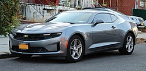

Sixth Generation Camaro (2016 - Present)
Debuting for 2016, the sixth-generation Camaro switched to the lightweight GM Alpha chassis, trimming about 200 lb and sharing little with other GM models; it launched with a 275-hp 2.0 T, 335-hp 3.6 V-6, and 455-hp LT1 V-8, while the 650-hp supercharged ZL1 followed, each paired with six-speed manuals or up to ten-speed automatics. Named Motor Trend's 2016 Car of the Year, the new Camaro soon gained twin 1LE handling packages (V-6 and V-8), a 50th-Anniversary Edition for 2017, and the track-focused 2018 ZL1 1LE that lapped the Nürburgring in 7:16.04—over 13 seconds quicker than the regular ZL1. A 2019 facelift introduced revised LEDs, a new infotainment system, and a polarizing SS grille that Chevrolet softened for 2020 by moving the bow-tie emblem and painting the cross-bar body color.
